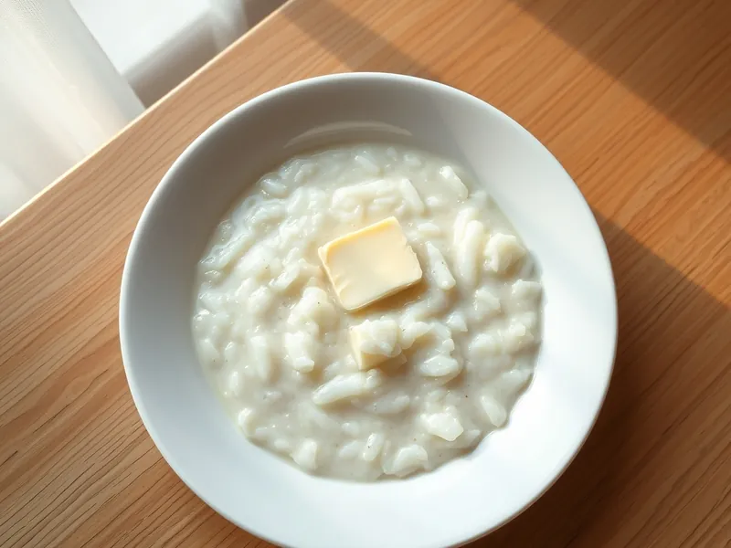

Рисовая каша на молоке
Густая молочная каша из круглого риса со сливочным маслом, как в детстве
40 мин2 порц.354 ккал на порциюБ 10 · Ж 13 · У 51Русская кухня
Открыть в приложении: порции, таймеры, список покупок
Продукты на 2 порц.
- Рис0,4 стак.
- Вода1 стак.
- Молоко500 мл
- Сахар1 ст. л.
- Соль1 щеп.
- Сливочное масло15 г
Как готовить
- Промойте круглый рис в холодной воде 3-4 раза, пока вода не станет почти прозрачной.
- Залейте рис водой и варите на среднем огне 10 минут, пока вода почти полностью не впитается.
- Влейте молоко, добавьте соль и сахар, доведите до кипения на среднем огне, помешивая.
- Убавьте огонь до слабого и варите 15-20 минут, помешивая каждые 3-4 минуты, чтобы каша не пригорела.
- Каша готова, когда зёрна мягкие и разваренные, а масса густая, но ещё течёт с ложки.
- Снимите с огня, положите сливочное масло, накройте крышкой и дайте постоять 5 минут.
Совет. Берите только круглый рис: длинный не разваривается и каша выходит жидкой с отдельными зёрнами. При остывании каша загустеет, поэтому снимайте её чуть жиже, чем хочется.